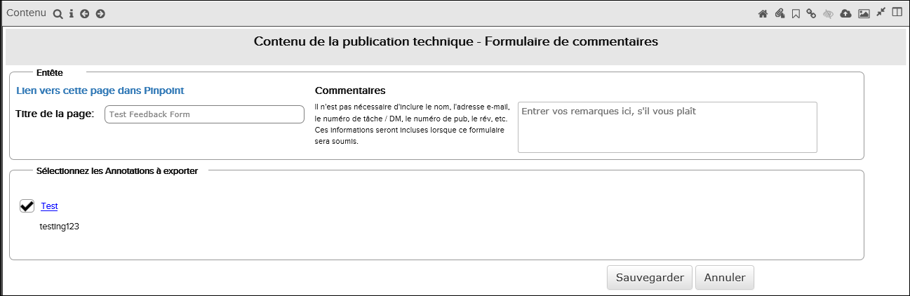
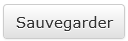
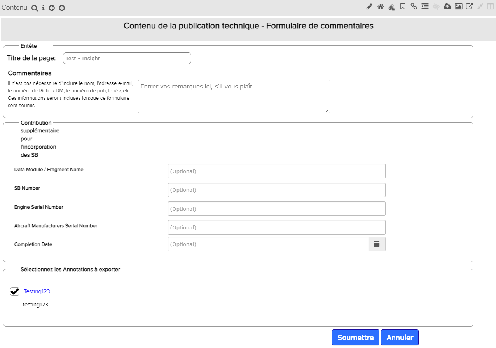

La fonction de remarque est liée à la fonctionnalité des annotations, car un document de commentaire peut éventuellement inclure des annotations faites sur des parties d'un document.
- Ouvrez le document sur lequel vous souhaitez donner votre remarque.
- Créez des annotations dans le document. (Pour les instructions, merci de se référ à Créer une nouvelle annotation).
- Cliquez sur le bouton
 pour ouvrir le Formulaire pour entrer
les remarques.
pour ouvrir le Formulaire pour entrer
les remarques.

Formulaire de remarques
- Fournir un titre de remarque . (Ce sera également le nom de fichier html.)Remarque : Vous devez avoir au moins 8 caractères dans le titre.
- Saissez du texte dans le champ remarques.
- Désélectionnez les annotations que vous ne souhaitez pas inclure dans les remarques.
- Cliquez sur le bouton

bouton pour enregistrer le remarque.Remarque : Toutes les options de mise en forme que vous avez appliquées aux annotations apparaissent dans le document de remarque. - Dans la boîte de dialogue qui s'affiche, choisissez d'ouvrir le fichier html ou de
l'enregistrer sur le disque.Remarque : Si l'annotation comporte une pièce jointe, vous pouvez cliquer sur ce lien pour la télécharger et la sauvegarder.Remarque : Pour IE 11 uniquement: Les pièces jointes avec une taille de fichier supérieure à 5 Mo peuvent être plus lentes à télécharger en html.Remarque : La capture d'écran ci-dessous fournit un exemple du document de rétroaction.

Exemple de document de remarques
- La section supérieure contient le texte du commentaire du formulaire de remarques.
- Sur le côté droit, une section Annotation qui s'affiche lorsque vous placez le pointeur de la souris dessus. Vous pouvez pointer sur l'annotation pour l'agrandir.
- Le texte annoté est affiché avec une surbrillance jaune.
- Les pièces jointes peuvent être téléchargées à partir du fichier html.
Fonction de rétroaction intégrée à Insight

Formulaire de remarques
- Nom du module de données/fragment
- Numéro SB
- Numéro de série du moteur
- Numéro de série des constructeurs d'aéronefs
- Date d'achèvement
Si la fonction de commentaires est configurée avec l'intégration des e-mails, lorsque l'utilisateur soumet le formulaire de commentaires, un fichier html du formulaire de commentaires est envoyé par e-mail à une liste de destinataires préconfigurée. Pour plus d'informations sur la configuration de la fonctionnalité d'intégration des e-mails Pinpoint Feedback, consultez la section "Intégration des commentaires Pinpoint avec l'e-mail" dans Flatirons Pinpoint Configuration Guide.
- Si le système est configuré pour rediriger l'utilisateur vers l'application Insight, lors de la soumission du formulaire de commentaires, le système lancera l'application Insight et affichera la nouvelle instance de flux de travail pour les commentaires sur un onglet de navigateur distinct.
- Si le système n'est pas configuré pour rediriger l'utilisateur vers l'application Insight, l'utilisateur recevra un e-mail confirmant que les commentaires ont été soumis avec succès. La nouvelle instance de flux de travail sera générée dans l'application Insight, mais l'utilisateur final ne verra pas la redirection automatique vers un onglet de navigateur supplémentaire.